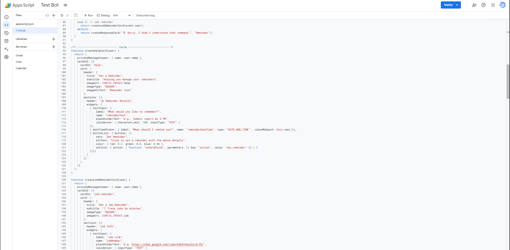
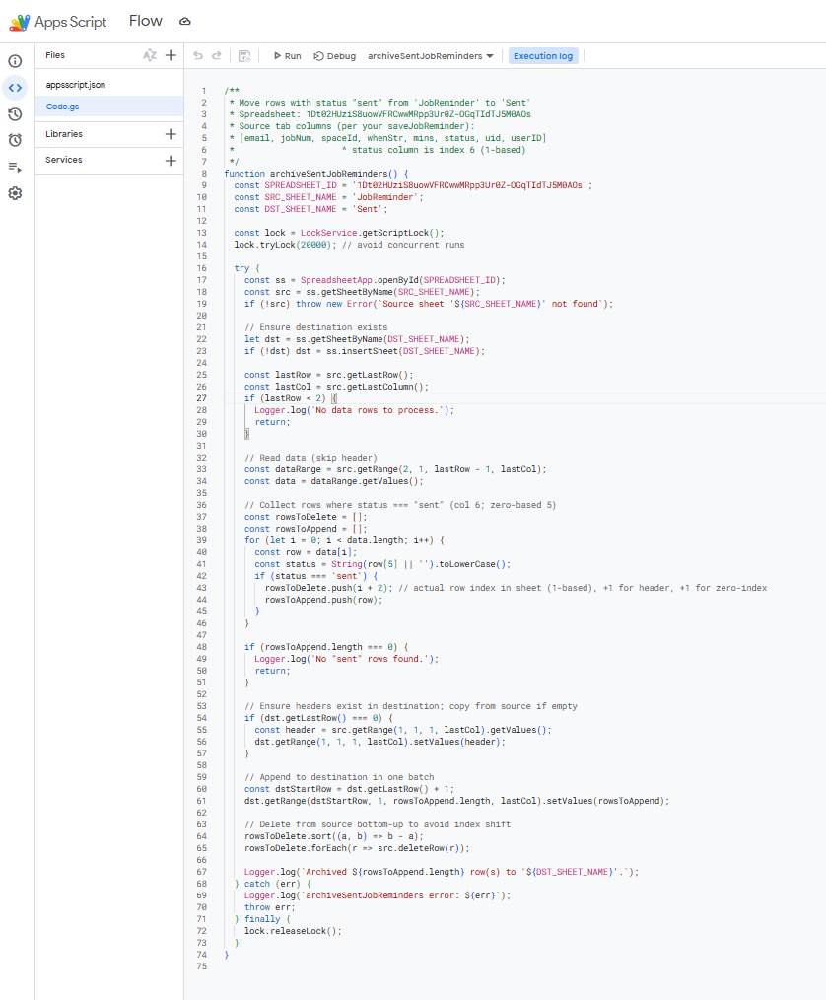
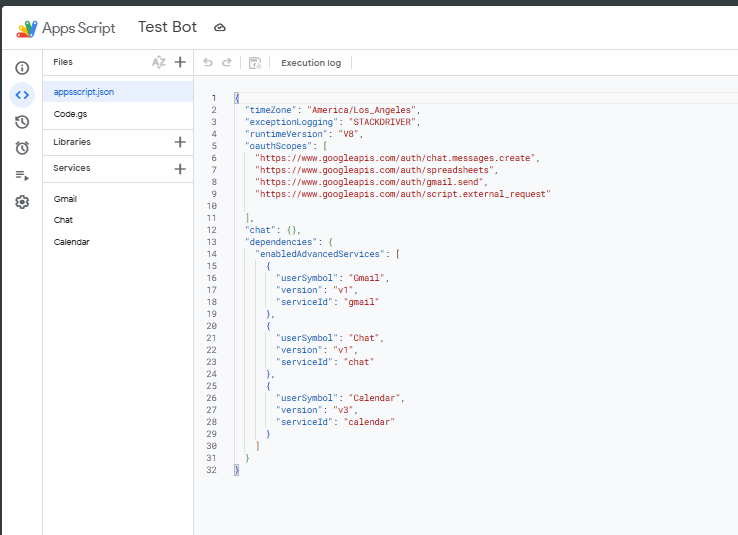

RG26 / Google Workspace
RG26 / Google Workspace
Google Chat reminder app
A reminder app designed for Google Chat, with card-based entry forms, separate spreadsheet records, and an archive for job reminders marked as sent.
Google Chat · Google Apps Script · Google Sheets · Gmail · Google Cloud
- Organization
- RG26 Technologies
- Focus
- Chat forms & reminder records
- Shown here
- Apps Script implementation
The problem
A reminder workflow needs to capture what to remember, retain the requested timing, and distinguish pending items from those already sent. Job reminders also need a link back to the relevant job so users can act on the notification.
The approach
Google Apps Script defines the Chat forms and the supporting spreadsheet workflow. A general reminder card collects a message and date and time, while a separate job-reminder card captures job information. An archive script moves job records marked as sent into a Sent sheet.
Implementation highlights
- Chat cards provide text inputs, a date and time picker, and a Set Reminder action.
- Google Sheets separates general reminders from job reminders.
- The configuration uses America/Los_Angeles for time handling and includes Google Chat and Gmail services.
- The archive script uses a script lock, copies sent rows in a batch, and deletes source rows from the bottom up to avoid shifting row positions.
Expected value
The app is intended to make reminder entry available within the team’s chat workspace and keep pending job records separate from the sent archive. That structure supports tracking reminders and reviewing completed entries.
Forms, archive & configuration
Select a screenshot to enlarge it.


Enlarge screenshot

Enlarge screenshot

Enlarge screenshotProject scope & source
The supplied screenshots show form definitions, archive logic, and configuration. The case study describes expected value; it does not report delivery reliability, adoption, or measured productivity gains.
Source: Case Study 2 Improved, supplied by Ian Van Anthony Gutierrez.
Planning a similar project?
Discuss a project